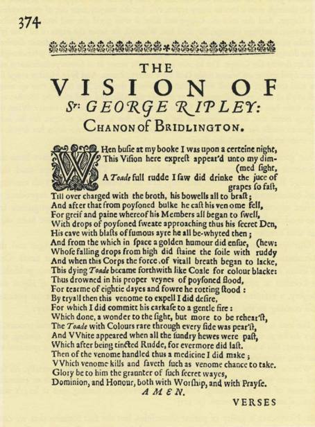

Swelter'd venom sleeping got, Boil
thou first i' the charmed pot.
Not only were toads venomous: to the medieval mind they were also a symbol
of lechery, as were warts and moles, with which toads were supposed to be
covered. We shall return to this matter of lechery; for the present we only
direct the reader's attention to the visual use of the toad in this sense by Hierony-
mus Bosch, in his Seven Deadly Sins, of which we reproduce the pertinent
detail in Plate xm.
The evil repute of the toad is not yet dead. There are English circles where
'Toad!' flung in anger would be a fighting insult now. The derivative 'toady'
brings to mind the sycophantic and hypocritical squat of the creature, with
its upturned watchful eyes. The bad name of the toad survives among un-
tutored countryfolk in England and the United States, where farmers cling to
the belief that the spittle of toads is poisonous, and that warts will grow on
the skin where a toad has touched. French peasants down to recent times, and
perhaps even now, put toads to death by methods shocking for their cruelty,
methods that reveal an ingenuity in torture ordinarily reserved by man for
his fellow-men.1 The venom-spitting toad in all his horrible lineaments was
painted for us by Hieronymus Bosch in a detail of his Judgment Day. Summoned
from his grave, a nude Cardinal (his worldly office proclaimed by his hat)
is floating away to everlasting damnation as a squatting toad directs a shaft of
his deadly saliva at the passing corpse.
Toads were closely linked with witchcraft. In France all witches harbored
toads as their familiars, and this was common in England and Scotland too.
In 1591, trials held in North Berwick elicited from the members of certain
witches' covens clear testimony that they had tried to murder King James VI
of Scotland, and that one of their plans had been to drop toad's venom on
his head or body, and to smear his small clothes with it.2 Presumably the poison
was to invade the person of the king through abrasions of the skin, which in
those days of absent hygiene and parasitic insects were taken for granted. From
the contemporary records of this case we learn that 'to drop a toad' was the
idiom used at that time for the milking of a toad's venom - a meaning of the
verb 'to drop' that the Oxford Dictionary fails to record - and in one of the
1. See Le Folklore de France, by Paul Sebillot, vol. in, La Faune et la Flore, Paris, 1906; pp. 280 ff.
2. See The Witch-cult in Western Europe, by Margaret Alice Murray, Clarendon Press, Oxford, 1921, p. 53; also
Life in Shakespeare's England, an anthology compiled by John Dover Wilson, published in 1911 by the Cam
bridge University Press and reprinted repeatedly since then. For additional references to toad poisoning in
England, see Miss Murray's latest work, The Divine King in England, 1954, Faber & Faber, London, p. 40;
also p. 61.
accounts of the trial we even learn the details of the method used. Here is a
paraphrase of the testimony of Agnis Tompson, a defendant, as published in
Newes from Scotland Declaring the Damnable Lif and death of Dr. Fian, printed in
London for William Wright in 1591:
She confessed that she took a blacke Toade, and did hang the same up by the heeles,
three dales, and collected and gathered the venome as it dropped and fell from it in an
Oister shell, and kept the same venome close couered, untill she should obtaine any parte
or peece of foule [soiled] linnen cloth, that had appertained to the Kings Maiestie, as shirt,
handkercher, napkin or any other thing which she practised to obtaine by meanes of one
John Kers, who being attendant in his Maiesties Chamber, desired him for olde acquain-
tance betweene them, to helpe her to one or a peece of such a cloth as is aforesaide, which
thing the said John Kers denyed to helpe her too, saying he could not help her too it.
And the said Agnis Tompson by her depositions since her apprehension saith, that if she
had obtained any one peece of linnen cloth which the King had worne and fouled, she had
bewitched him to death, and put him to such extraordinary paines, as if he had beene lying
upon sharp thornes and endes of Needles.
It comes as a shock to modern man to learn that his ancestors considered the
common toad venomous as the adder. It comes as a double shock to him when
he learns that these ancestors were probably right, and that on this subject
they were better informed than he is. The toad has no fangs and cannot bite.
But on his coarse skin are scattered numerous glands that look like warts or
pustules; and when the creature is frightened or in pain, these glands exude
a milky fluid, which is powerfully toxic. Hidden inside the skin, invisible to
the naked eye, is another set of glands, which lubricate the skin with a slimy
mucoid secretion, easily perceived by the human hand but perhaps not poison-
ous. The witches who kept toads as their familiars knew the wicked properties
of the toad's milky secretion, and it is a fair surmise that the singular tortures
reserved for toads by some countryfolk were originally devised to milk the
toads of their deadly drops. The venom of the toad cannot penetrate healthy
human skin, but takes hold of any mucous membrane, and if swallowed or
absorbed through an abrasion of the skin, might well be lethal. Among those
who work with toads, it is common knowledge that their secretions, if acci-
dentally brought into contact with the eyelid, cause an acute burning irritation.
(The inflamed swelling of the sebaceous gland at the margin of the eyelid,
commonly known in English as a stye, is called in vulgar Dutch paddescheet,
'toad's excrement', even when no toad is involved.)
In the 15th century Chronicle of St. Albans there is an account of the death
of King John of England that possesses extraordinary interest both for its own
sake and for the role played in it by a toad. History relates that the King in
the year 1216 was making his way north with his retinue, dogged by his enemies
and ill. In crossing the Wash he lost much of his baggage train, to his great
sorrow, and after lying at the Cistercian monastery at Swineshead, he progressed
some distance beyond to the castle at Newark-on-Trent, where he died on
October 19, on "the morrow after St. Luke's Day". The Chronicle of St. Albans
says that his death was precipitated by a draught of poisoned ale served to
him at Swineshead. Though perhaps the scribe was only giving currency to a
malicious canard, this scarcely affects the interest of his narrative for us, because
he was writing what he and his contemporary readers were ready to accept,
and the role in the affair that he assigns to a toad conformed to common beliefs
and probably to esoteric knowledge. The provocation that the scribe reports
for the alleged regicide is curious. The King swore a great oath, says the chro-
nicler, that if he was spared another six months, the loaf of bread then worth
a ha'penny would be selling at 20 shillings! A modern reader may be excused
if this passage conjures up for him the specter of runaway inflation, but for the
chronicler and his public it meant famine and panic in the market place. Why
should King John have foreseen famine and panic as the inevitable sequel to his
own survival > And why should the chronicler, as well as the monk of Swines-
head, have considered this sequence so obvious that it called for no explana-
tion? Miss Margaret Murray in The Divine King in England uncovers the strange
beliefs that seem to have underlain the King's great oath and justified the monk's
deed in his own eyes and his superior's, a vignette of medieval behavior baffling
for us but clear and simple then.
Here, then, is the story of King John's death as put down about the year
1483, more than 250 years after the event, by the chronicler of St. Albans:1
The Kyng came by the Abbey of Swynesheade, and there hee abode two dayes; And as
he sate at mete, he axed a Monke of the house, How moche that loof was worth that was
sette before hym uppon the table > And the Monke said, That the loof was worth but an
half-penny. O said the Kinge tho [then], Here is grete chepe of brede; Now sayd he tho,
And [=if] I may lyve ony while, such a loof will be worth xx. shillinges or half a year be
gone. And so whan hee sayd this worde, moche hee thought, and often hee sighed, and
toke and etc of the brede, and sayd; By God, the worde that I have spoken, it shall be
soth. The Monke that stode before the Kynge was for this worde full sory in his herte,
and thought rather hee would hymselfe suffre deth, and thought yf he might ordeyne
therefore some manere remedye. And anone the Monke wente unto his Abbot and was
shriven of him, and tolde the Abbot all that the Kynge had sayd; And prayed his Abbot
for to assoyle [absolve] him, for he would yeve the Kynge such a drynke, that all Englonde
I. The extract from the Chronicle is copied from the History of King John, by William Prynne, London, 1670,
pp. 36-7.
PLATE xn. Hieronymus Bosch. The Last Judgment. Detail: Spitting toad.
Munich, Bayerische Staatsgemaldesammlungen.
sholde be glad thereof and joyfull. The[n] yede [went] the Monke into a gardeyne, and
founde a grete Tode therein, and toke her up and put her in a Cuppe, and prycked the
Tode thorugh with a broche many tymes, tyll that the venym came out of every syde in
the Cuppe, And tho toke the Cuppe and filled it with good ale, and brought it before
the Kynge, knelynge sayenge; Sir, sayd hee, Wassayll, for never the dayes of all your lyfe
dronke ye of so good a Cuppe. Begyn Monke, sayd the Kynge: and the Monke dranke a
grete draught, and toke the Kynge the Cuppe, and the Kynge dranke also a grete draught,
and set downe the Cuppe. The Monke anone ryght wente in to farmerye [infirmary] and
there dyed anone, on whoos soule God have mercy, Amen. And fyve Monkes synge for
his soul specially, and shall whyle that the Abbaye standeth. The Kynge rose up anone
full evyll at ease, and commaunded to remove the table, and axed after the Monke; and
men tolde him that hee was deed, for his wombe [belly] was broken in sundre. Whan the
Kynge herde this, he commaunded for to trusse, but it was for nought, for his belly
began to swelle for the drynke that he had dronke, and within two dayes hee deyed, on
the morowe after saynt Lukis daye.
That 'great toad' found in the garden at Swineshead could only have been the
common toad of western Europe, bufo vulgaris. This is the same toad that
George Ripley, a writer on alchemy, saw in a vision late in the I5th century,
and commemorated in curious verse. His short poem, which we reproduce as
it first appeared in print, eloquently expresses medieval man's repugnance for
the toad, and reveals how intimate Ripley and his circle must have been with
the toad's milky exudate and its fearsome virtue.
Our quotations concerning the toad go back to the Middle Ages and the
Renaissance, but the ideas therein expressed lived on until recent times. One
William Northcote, for many years a surgeon in His Majesty's Navy, published
in London in 1770 a serious medical work, The Marine Practice of Physic and
Surgery, a reference book for use on ships. In it there is a chapter on poisons,
and coming to the toad, Mr. Northcote has surprising things to say:
The toad is full of venom, and the very centre and repository of terrestrial poisons...
they discharge their venom on herbs (particularly strawberries) by pissing, spitting, and
vomiting; this is not only pernicious by getting into the body, but by being sprinkled on
the skin, unless washed off immediately with urine and salt.
When a person is infected, his skin turns yellow, his body swells universally, his lips
and tongue grow black, and a stammering supervenes; he is seized with an asthmatic
shortness of breath, vomiting, cold sweats, convulsions, fainting, and at length with
death, if not timely remedied, [p. 421]
Mr. Northcote is guilty of patent absurdities, but the fact remains that we can-
not deny for sure his clinical description of the victims of toad poisoning, for
modern medical records offer us no histories of such cases. This seasoned practi-
tioner of the 18th century was closer than we, chronologically, to the era when

Fig. 2. From Theatrum chemicum Britannicum, by Elias Ashmole, London, 1652.
men knew the properties of the toad's venom, and his account of the symptoms
is the only one emanating from a medical pen known to us. It stands thus
uncorroborated and unchallenged, a wisp of dubious expert testimony in what
would otherwise be a scientific vacuum.1
1 here exists an additional body of evidence of a different order testifying
to the toad's sinister grip on the popular imagination in times gone by. Men
take refuge in euphemisms when they talk about things that move them pro-
foundly. People 'pass away' rather than 'die', and Satan becomes the 'Evil
One'. Abhorred creatures are called out of their names, or else their names
are subjected to irregular distortions in sound.
In the languages of Europe few creatures can compete with the toad for
evasive nomenclature. The measure of this tabu lies in the number of etymologi-
cally unrelated words for it, not to speak of the variety of dialectical variants
for each word. Here are a few of the important ones: in Latin bufo, and in Italian,
rospo and botta; in Spanish, sapo and escuerzo; in French, crapaud and hot; in
German, Krote; in Russian, zhaba; around the North Sea, padde; and in English,
'toad'. An abundance of diverse names like this makes difficulties for the philolo-
gist, who has more to show for his efforts when he goes coursing through the
Indo-European languages after words like 'wolf and 'fox', words that turn up in
more or less regular mutations in various languages. Some of the words for
'toad' defeat the philologists completely. Take 'toad' itself. It exists in several
variations in English, of which 'tad', as in 'tadpole', is the most important.
It is genetically related to the three-syllabled variants in Anglo-Saxon, tadie
and tadije. There the trail is lost: no remoter ancestry is known for the word,
and it has no kin in other tongues.
We believe that all, or almost all, of the words for 'toad' in Europe can be
explained, if we look for the figures of speech that are latent in them by focus-
ing our attention on the creature itself. Instead of attacking the 'toad' problem
by frontal assault, let us approach by a postern gate, viz., through the Celtic
languages. We know the words for 'toad' in five Celtic languages, and, as
befits a creature veiled by tabu, the five words appear to be unrelated to each
other. From ancient Gaul craxantus2 survives in a single citation. In Cornish the
1. In the second century before Christ an Ionian Greek, Nikander of Colophon, composed a metrical essay
entitled Alexiphartnaca on poisons and their antidotes, and in lines 567-594 he discusses toad poisoning. His
observations are obscure, perhaps deliberately so, but in tone they are not far removed from Mr. Northcote's.
As we go to press we learn that Howard F. Fabing, M. D., of Cincinnati, has been giving intravenous in-
jections of bufotenine, the toxic agent secreted by the epidermal glands of the toad, to volunteers in the Ohio
State Penitentiary.
2. See Franzosisches Etymologisches Worterbuch, by Walther von Wartburg.
toad was croinoc or cronec, and this meant 'the skin' or 'the hide', from croin,
meaning skin. The Cornishman referred to the toad by its skin, covered as it
is with pustules, and notorious for the way the creature blows itself up with
air like a sac when making its eerie call. In Welsh the toad is the llyffant; this
appears to mean 'the slimy one,' with obvious reference to the slippery secretions
of the skin. The common toad does not exist in Ireland, and the only toad
reported there is the bufo calamita, known in English as the natterjack. Its
range in Ireland is so limited that almost no natives have ever seen a toad:
the natterjack has been found in historic times only over an area of some twenty
square miles, around Castlemaine Harbor at the head of Dingle Bay in Kerry.
The expression for 'toad' in Irish is 'the poisonous frog' - losgann nimhe; and
since the word for frog - losgann - means 'the burning one', we arrive ultimately
at 'the poisonous burning one' - a doubled reference to the toxic, stinging
secretion of the pustules.
Now we turn to the Breton language, and here perhaps we discover a
loose end to Ariadne's thread, a possible clue to our problem. The word for
toad in Breton is tousec. It comes from the Latin toxicum, and therefore means
'the poisonous one'. On an earlier page we said that the standard word for
'toadstool' in Breton is kabell tousec, wherein kabell (from the Low Latin cappa
and capello] means 'cap'. When the early Bretons spoke of the toadstool as
the kabell tousec, the term meant to them 'the poison cap', as well as the toad's
cap; and the variant skabell tousec could have meant 'the poison stool' as well
as the toad's stool.1
In Britain, the island that the Bretons had left behind, are we surprised to
discover that the Anglo-Saxon word tosca meant toad ? It is, we submit, identical
to the Breton word, offspring of toxicum, and another example of'the poisonous
one'. We have mentioned the English name for the bufo calami ta - the nat-
terjack. We believe that the root of this word is to be found in the Anglo-
Saxon word for poison -ator; a word that as 'etter' survived in English for
centuries, and still circulates in dialect, to designate the venom of a reptile, and
the corrupt matter that oozes from a suppurating ulcer or abscess. An 'attercop'
is an old word for a (supposedly poisonous) spider. In modern Dutch etter
still means pus. If we are right, what we now call 'a natterjack' was once 'an at-
terjack', the shuttling V being a well known linguistic quirk. The jack' is
simply the same element that we find in the jumping-jack'. The 'atterjack'
is then a 'poison jack', and an Anglo-Saxon rendering of the Latinism tosca.
Let us pause on tosca, that long forgotten word for the toad. It had a doublet
I. See Lexique Etymologique du Breton Modcrne, by Victor Henry, Rermes, 1900; p. 268.
in Anglo-Saxon, taxe, which survives in a single citation. The alternation in the
vowels reminds us of 'toad' and 'tad', and also of a parallel in Latin: toxicum
meaning 'poison' and taxus, 'yew'. In antiquity the yew was notorious as a
poisonous tree, and the adjective taxicus was popularly associated with toxicum.
In Greek TO^OV meant 'bow' and 'arrow' and 'bow-and-arrows'. Philologists
are inclined to deny a link between the Greek and the Latin words, and even
between the Latin words themselves, but concede that the problem is unclear.
Until we know more about the role of bows and poisoned arrows in early
magic and myth, it is well to suspend judgment. Bows were made of yew,
and arrow-heads were smeared with poison, perhaps from yew. Robert Graves
has pointed out1 that arrow-heads were sometimes knapped with double tangs
to resemble the yew. The making of such arrow-heads demanded far more
patience and skill than the simple willow-leaf and elder-leaf points, and would
be less effective in hunting or fighting. They must have been ceremonial in
function and were undoubtedly bathed in mana. As we look back in recorded
history, our 'toad' or 'tad' emerges from the Anglo-Saxon world as the ven-
omous helpmeet of sorcerers. The very name of the creature, tousec or tosca
or taxe, is redolent with poison, potent with mana. Down through the Middle
Ages and into modern times the toad was still freighted with this primitive
cargo of evil. Tosca and taxe may have contributed to the shaping of our words
'toad' and 'tad'. As we said before, the etymology of 'toad' is unknown. We
must consider the possibility that, by steps that may forever remain obscure,
the Anglo-Saxon words come down to us in 'toad' and 'tad' by lineal descent.
The irregular mutation of -sc- and -x- into 'd' could have been a euphemistic
substitution.2
If 'toad' descends etymologically to us from toxicum, then in English as in the
Breton tongue a 'toadstool' in its ultimate meaning is a 'poison stool', and the
idea of poison, rather than the toad, may have been dominant in the minds of
those who first applied this term to the wild fungi in the Anglo-Saxon world.
In any case, whatever the etymology, the cultural soil in which 'toad' had its
beginnings explains that aura of abhorrence which bathes the word to this
1. See his White Goddess, a Historical Grammar of Poetic Myth, Creative Age Press, New York, 1948, footnote
on p. 320; also p. 38.
2. If Latin -x- became -s- in tosca, then the Anglo-Saxon word results from the omission of the middle syllable,
toxicum becoming tos'ca. But if -x- by phonetic transposition became -sc- we arrive directly at tosca by the ero
sion of the last syllable. If taxe or a hypothetical toxe became by euphemistic mutation tadse or todse, the evolu
tion into 'toad' or 'tad' is easy, the sibilant being lost by a popular back-formation of an erroneous singular; cf.
'toad's stool' which becomes 'toad-stool'; also 'pea', 'asset', 'shay', 'sherry', 'cherry', etc., all of which have lost
the sibilant with which they originally ended. The mutation of 'c' into 't' is not altogether conjectural. In the
Anglo-Saxon dictionary of Joseph Bosworth and T. Northcote Toller, under tosca, we find a quotation in which
the plural of tosca appears with 't', - tostan.
day in the English language. We discover why the Oxford Dictionary fails to
satisfy us when it dismisses the problem of the toadstool by calling it a 'fanciful'
term. We realize why the headline in The Times, EDIBLE TOADSTOOLS, shocks us
as a contradiction in terms.
We have already observed that the Irish word for 'frog' is the 'burning one'.
Here again the reference is to the secretion of the epidermal glands of the
amphibian, the secretion that stings when it comes into touch with a mucous
membrane. This Irish word has its parallels in certain of the Germanic languages.
In Old High German the verb 'to burn' was zusken, and by regular mutation
of sounds this explains the Danish word for the toad, tudse, in which today
the letter d is silent. In Swedish the corresponding word is tossa, with dialect-
ical variants tosk and tusk; and there also survives a citation from 1652 in the
form tadza, pronounced perhaps as 'totsa' would be in English. In all these
words the toad is called the 'burning one', as the frog is in Irish. These words
find their semantic parallel in the vulgar Dutch term paddescheet, the stye with
its burning sting, to which we called attention earlier. In Greek the word
for toad, eppOvo?, is usually explained as meaning 'the brown one', but brown
is the burnt color, and Professor Andre Martinet has suggested that cpptivoc;
may refer to burning rather than to the color.
We know that the secretion of toads was used by the practitioners of witchcraft.
We know that in ancient Rome the lethal properties of the wild fungus known
as the deadly amanita or destroying angel or death cup were familiar to the
practitioners of venomy, as we choose to call the art of murder by poison. But
no positive evidence survives, so far as we know, to show that in the practice
of witchcraft the secrets of the fungi were utilized; no evidence, that is, beyond
'toadstool' itself, this humble folkword with its secret message. Does the absence
of positive evidence mean that the toadstool was not used in the practices of the
Old Religion, or that the secret was successfully kept? For the present we leave
the answer to the reader.